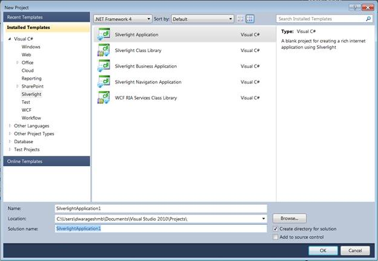
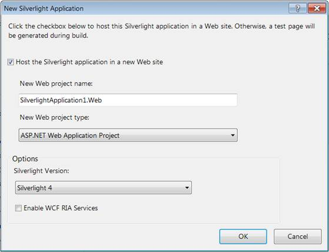
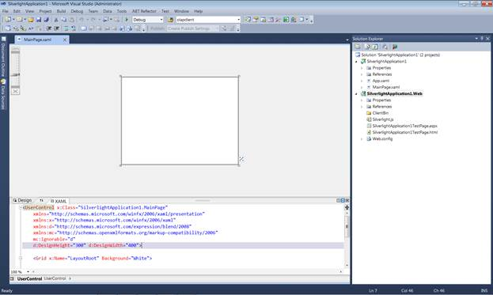
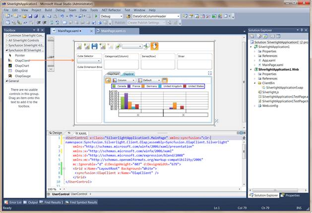
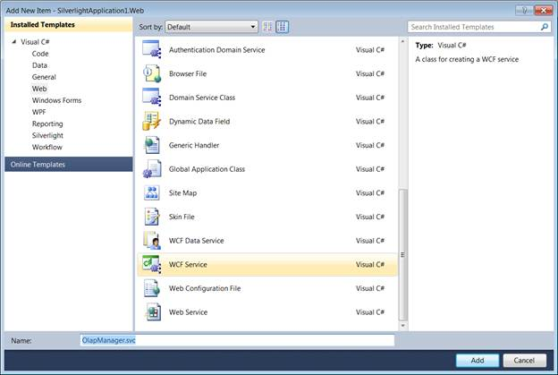

To add OLAP Client to an application:
4. Click the Start menu, and then click Microsoft Visual Studio 2010.
5. From the File menu, click New Project. The New Project dialog box is displayed, as shown below.

Figure 5: New Project Dialog Box
6. Select the Silverlight Application by navigating to the Silverlight node and then click OK.
7. Host the Silverlight application on the website.

Figure 6: Hosting Silverlight Application in Web
8. Click OK, to create a web project as well as a Silverlight project, as shown below.

Figure 7: New Silverlight Application
9. Drag and drop the OLAP Client from the toolbox on the MainPage.xaml.

Figure 8: Silverlight Application with OLAP Client
10. Add the following two assemblies as references to the web project:
· Syncfusion.Olap.Base
· Syncfusion.OlapSilverlight.BaseWrapper
11. Add a WCF Service to the web project by right-clicking the Project -> Add New Item -> WCF Service. Then, name the Service as OLAP Manager and delete the IOlapManager.cs file as the service needs to be inherited with IOlapDataProvider.

Figure 9: Add New Item Dialog Window
12. Inherit the newly added WCF service with the IOlapDataProvider and explicitly implement the IOlapDataProvider. The connection to the database is done with the help of the WCF service. The service has to be created and instantiated as described below.
13. The WCF Service has to implement the IOlapDataProvider interface, and for implementing this interface, you require the OlapDataProvider, which can be instantiated by passing the connection string.
The code snippet is displayed below:
|
[C#]
public class OlapManager : IOlapDataProvider
|
|
[VB]
Public Class OlapManager Implements IOlapDataProvider Private dataManager As OlapDataProvider = Nothing ''' <summary> ''' Initializes a new instance of the <see cref="OlapManager"/> class. ''' </summary> Public Sub New() ' Instantiating the OlapDataProvider with Connection String dataManager = New OlapDataProvider("DataSource=.; Initial Catalog=Adventure Works DW") End Sub
#Region "IOlapDataProvider Members"
''' <summary> ''' Executes the olap report. ''' </summary> ''' <param name="report">The report.</param> ''' <returns></returns> Public Function ExecuteOlapReport(ByVal report As Syncfusion.OlapSilverlight.Reports.OlapReport) As Syncfusion.OlapSilverlight.Data.CellSet Dim cellSet As Syncfusion.OlapSilverlight.Data.CellSet = Me.dataManager.ExecuteOlapReport(report) ' Closing the Provider Connection Me.dataManager.DataProvider.CloseConnection() Return cellSet End Function
''' <summary> ''' Executes the MDX query. ''' </summary> ''' <param name="mdxQuery">The MDX query.</param> ''' <returns></returns> Public Function ExecuteMdxQuery(ByVal mdxQuery As String) As Syncfusion.OlapSilverlight.Data.CellSet Dim cellSet As Syncfusion.OlapSilverlight.Data.CellSet = Me.dataManager.ExecuteMdxQuery(mdxQuery) ' Closing the Provider Connection Me.dataManager.DataProvider.CloseConnection() Return cellSet End Function
''' <summary> ''' Gets the cubes. ''' </summary> ''' <returns></returns> Public Function GetCubes() As Syncfusion.OlapSilverlight.Data.CubeInfoCollection Dim cubes As Syncfusion.OlapSilverlight.Data.CubeInfoCollection = Me.dataManager.GetCubes() ' Closing the Provider Connection Me.dataManager.DataProvider.CloseConnection() Return cubes End Function
''' <summary> ''' Gets the cube schema. ''' </summary> ''' <param name="cubeName">Name of the cube.</param> ''' <returns></returns> Public Function GetCubeSchema(ByVal cubeName As String) As Syncfusion.OlapSilverlight.Data.CubeSchema Dim cubeSchema As Syncfusion.OlapSilverlight.Data.CubeSchema = Me.dataManager.GetCubeSchema(cubeName) ' Closing the Provider Connection Me.dataManager.DataProvider.CloseConnection() Return cubeSchema End Function
''' <summary> ''' Gets the child members. ''' </summary> ''' <param name="memberUniqueName">Unique name of the parent member.</param> ''' <param name="cubeName">Name of the cube.</param> ''' <returns></returns> Public Function GetChildMembers(ByVal memberUniqueName As String, ByVal cubeName As String) As Syncfusion.OlapSilverlight.Data.MemberCollection Dim childMembers As Syncfusion.OlapSilverlight.Data.MemberCollection = Me.dataManager.GetChildMembers(memberUniqueName, cubeName) ' Closing the Provider Connection Me.dataManager.DataProvider.CloseConnection() Return childMembers End Function
''' <summary> ''' Gets the level members. ''' </summary> ''' <param name="levelUniqueName">Unique name of the level.</param> ''' <param name="cubeName">Name of the cube.</param> ''' <returns></returns> Public Function GetLevelMembers(ByVal levelUniqueName As String, ByVal cubeName As String) As Syncfusion.OlapSilverlight.Data.MemberCollection Dim levelMembers As Syncfusion.OlapSilverlight.Data.MemberCollection = Me.dataManager.GetLevelMembers(levelUniqueName, cubeName) ' Closing the Provider Connection Me.dataManager.DataProvider.CloseConnection() Return levelMembers End Function
#End Region End Class
|
Include the Custom Binding and the Service endpoint address in the Web.Config file under the ServiceModel section.
|
[Web.Config]
<!--Binding--> <bindings> <customBinding> <binding name="binaryHttpBinding"> <binaryMessageEncoding/> <httpTransport maxReceivedMessageSize="2147483647"/> </binding> </bindings>
<!—Endpoint Address--> <services> <service name="SilverlightApplication1.Web.OlapManager" > <endpoint address="binary" binding="customBinding" bindingConfiguration="binaryHttpBinding" contract="Syncfusion.OlapSilverlight.Manager.IOlapDataProvider"> </service> </services>
|
Add the System.ServiceModel assembly as a reference for the Silverlight Project.
Add the following Namespace in MainPage.xaml.cs:
· System.ServiceModel
· System.ServiceModel.Channels
· Syncfusion.OlapSilverlight.Manager
· Syncfusion.OlapSilverlight.Reports
Service instantiation in the Silverlight Project (MainPage.xaml.cs).
Declare IOlapDataProvider for Service instantiation.
|
[C#]
// Declaring the IOlapDataProvider for service instantiation
|
|
[VB]
' Declaring the IOlapDataProvider for service instantiation Dim DataProvider As IOlapDataProvider = Nothing
|
Specify custom binding and instantiate the DataProvider from the ChannelFactory.
|
[C#]
private void InitializeConnection() System.ServiceModel.Channels.Binding customBinding = new CustomBinding(new BinaryMessageEncodingBindingElement(), new HttpTransportBindingElement { MaxReceivedMessageSize = 2147483647 }); EndpointAddress address = new EndpointAddress(new Uri(App.Current.Host.Source + "../../../../OlapManager.svc/binary")); ChannelFactory<IOlapDataProvider> clientChannel = new ChannelFactory<IOlapDataProvider>(customBinding, address);
|
|
[VB]
Private Sub InitializeConnection() Dim customBinding As System.ServiceModel.Channels.Binding = New CustomBinding(New BinaryMessageEncodingBindingElement(), New HttpTransportBindingElement With {.MaxReceivedMessageSize = 2147483647}) Dim address As EndpointAddress = New EndpointAddress(New Uri(App.Current.Host.Source & "../../../../OlapManager.svc/binary")) Dim clientChannel As ChannelFactory(Of IOlapDataProvider) = New ChannelFactory(Of IOlapDataProvider)(customBinding, address) DataProvider = clientChannel.CreateChannel() End Sub
|
Create the Report (optional)
Report creation is optional for OLAP Client. You can assign OlapDataManager without the current report to OLAP Client’s OlapDataManager property, and the OLAP Client will render an empty report.
If you want to load the OLAP Client with custom report, then you have to create a report. For creating reports there is a report object called OlapReport. OlapReport comprises CategoricalItems, SeriesItems, SlicerItems, and FilterItems.
It is associated with the OlapDataManager as the currentreport property. When you assign the OlapDataManager with a report to the OLAP Client, it will render with that report and there will be no need for a DataBind() call.
Data Binding of OLAP Client (optional)
The DataBind method of OLAP Client is optional, and it is not mandatory to call DataBind() method to render the control with the created report. The control will get rendered by assigning the OlapDataManager, which has the current report bonded.
Code snippet for loading the client with the user specified report:
|
[C#]
private void MainPage_Loaded(object sender, RoutedEventArgs e)
|
|
[VB] Private Sub MainPage_Loaded(ByVal sender As Object, ByVal e As RoutedEventArgs) ' Initialize the service connection Me.InitializeConnection() ' Instantiating the OlapDataManager Dim m_OlapDataManager As OlapDataManager = New OlapDataManager() ' Specifying the DataProvider for OlapDataManager m_OlapDataManager.DataProvider = Me.DataProvider ' Set Current report for OlapDataManager m_OlapDataManager.SetCurrentReport(CreateOlapReport()) ' Specifying the OlapDataManager for OlapClient Me. OlapClient.OlapDataManager = m_OlapDataManager ' Data Binding(optional) Me.OlapClient.DataBind() End Sub
|